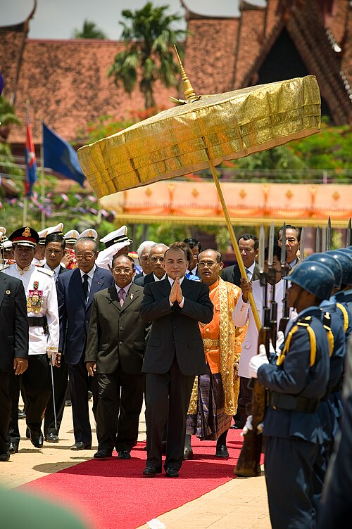

Main articles: Politics of Cambodia, Elections in Cambodia, and List of political parties in Cambodia
Cambodia is a constitutional monarchy with a unitary structure[139] and a parliamentary form of government.[140] The king is officially the head of state and is the symbol of unity and "perpetuity" of the nation, as defined by Cambodia's constitution.[141] Legislative powers are shared by the executive and the bicameral Parliament of Cambodia (សភាតំណាងរាស្ត្រ, sâphéa tâmnang réastrâ), which consists of a lower house, the National Assembly (រដ្ឋសភា,
rôdthâsâphéa) and an upper house, the Senate (ព្រឹទ្ធសភា, prœ̆tthôsâphéa). Members of the 125-seat National Assembly are elected through a system of
proportional representation and serve for a maximum term of five years. The Senate has 62 seats, two of which are appointed by the king and two others by the National Assembly, and the rest are elected by the commune councillors from the 24 provinces of Cambodia. Senators serve six-year terms.
Officially a multiparty democracy, in reality, "the country remain[ed] a one-party state dominated by the Cambodian People's Party and PM Hun Sen, a recast Khmer Rouge official in power since 1985. The open doors to new investment during his reign have yielded the most access to a coterie of cronies of his and his wife, Bun Rany", according to Megha Bahree, a writer on Forbes.[143] Cambodia's government has been described by Human Rights Watch's Southeast Asian director, David Roberts, as a "relatively authoritarian coalition via a superficial democracy".[144]
PM Hun Sen vowed to rule until he turned 74.[145][92] His government was regularly accused of ignoring human rights and suppressing political dissent. The 2013 election results were disputed by the opposition, leading to demonstrations in the capital. Demonstrators were injured and killed in Phnom Penh where a reported 20,000 protesters gathered, with some clashing with riot police.[146] From a humble farming background, Hun Sen was 33 when he took power in 1985, and was by some considered a long-ruling dictator.[147] Hun Sen was succeeded by his son Hun Manet as PM in August 2023 following an election that was deemed by independent and foreign media and politicians to be neither free nor fair.[5][6][7] Hun Sen remains the de facto ruler of Cambodia through his continued leadership of the Cambodian People's Party.[148] Following the 2024 Senate election, Hun Sen became president of the Senate, a role which gives him the power to sign off on laws in the King's absence.[149]
Since the 2017 crackdowns on political dissent and free press, Cambodia has been described as a de facto one-party state.[18][150][151]
